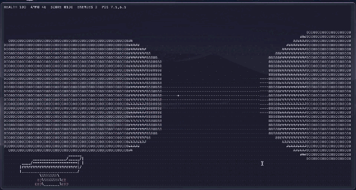

Wolfenstein 3D Terminal Renderer
3D in je terminal. Alleen tekens.
Een shooter in C, zonder game-engine. Loop door een doolhof, schiet de vijanden neer en overleef drie waves.
$ git clone https://github.com/bo-xd/wolfenstein3d-style-terminal$ cd wolfenstein3d-style-terminal$ docker build -t wolf-terminal . && docker run --rm -it wolf-terminal
Werkt overal waar Docker draait. Op Linux kan ook ./build.shGPL v3
Toetsen
Lopen en draaien. De pijltjes werken ook.
Schieten
Opnieuw beginnen
Afsluiten
gameplay.gif

Echte opname uit de terminalBuild van vóór de waves600×321
Systeem
- Taal
- C11
- Engine
- geen
- Beeld
- ncursesw
- Map
- 16 × 16
- Waves
- 3
- Start
- 100 HP · 48 kogels
- Tests
- 6 suites
- CI
- GCC · Clang
Modules: 9
Zo werkt het.txt
Een straal per kolom. Voor elke kolom tekens gaat er een straal de map in, vakje voor vakje, tot hij een muur raakt. Hoe verder de muur, hoe korter hij op je scherm staat.
Afstand wordt een teken. Dichtbij is een muur een zware @, ver weg een lichte `. Zo maakt de game grijs, net als deze pagina met stipjes.
@%#8O0o*+=-;:,.`dichtbijver weg
Muren stoppen kogels. Schieten gebruikt dezelfde stralen als het beeld. Wat je niet ziet, raak je niet.
Documenten
6 onderdelenOpent op GitHub
Patchnotes.log
- Drie waves: elke ronde snellere vijanden en 24 extra kogels.
- Vijanden nemen elk een andere route en komen niet meer tegelijk aan. Opnieuw beginnen met R. Allebei uit een playtest van een klasgenoot.
- Munitie en health liggen nu in de map.
- Vijanden komen op je af en vallen aan. Game Over en overwinningsscherm.
- clang-tidy controleert de code bij elke push.
- Automatische tests met GCC en Clang, en Docker.
- Eerste versie: raycaster, schaduw op afstand, wapen en vijanden.
7 regelsUit de commitgeschiedenis